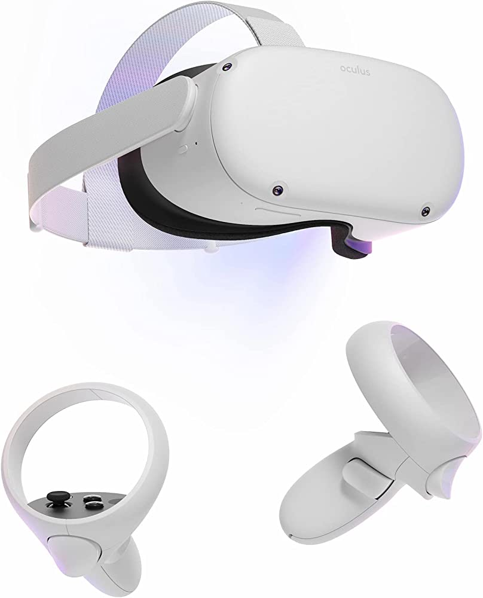

 Allow your users to be the initiators of actions. Give users the sense that they are in full control of events occurring in the digital space. Earn their trust as you design the system to behave as they expect.